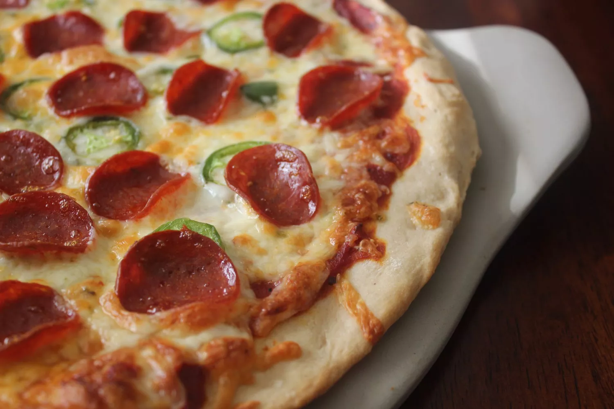

Home
Pizza

Homemade Pizza
This homemade pizza recipe features a soft, chewy crust topped with a flavorful tomato sauce, melted mozzarella,
and your favorite toppings. It's simple, delicious, and perfect for any occasion. Serve with a side of marinara
sauce for dipping or a fresh salad.
Ingredients
- Pizza dough
- Tomato sauce
- Mozzarella cheese
- Olive oil
- Spices and herbs
- Your favorite toppings
Steps
- Preheat your oven to 475°F (245°C).
- Roll out the pizza dough on a floured surface.
- Spread tomato sauce evenly over the dough.
- Add shredded mozzarella cheese and your favorite toppings.
- Drizzle with olive oil and sprinkle with herbs and spices.
- Bake for 12-15 minutes until the crust is golden and cheese is bubbly.
- Let the pizza cool for a few minutes before slicing and serving.